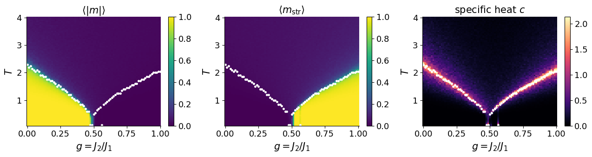
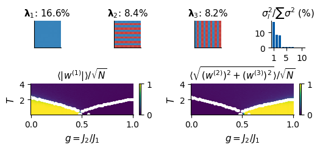
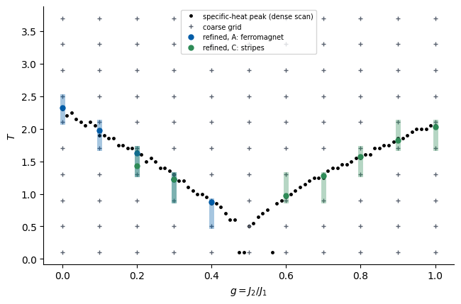

Lab 020 — The \(J_1\)–\(J_2\) phase diagram without labels
Lab 018 introduced the frustrated \(J_1\)–\(J_2\) Ising model and produced snapshots on a grid in the \((g,T)\) plane, \(g=J_2/J_1\). We know its physics: a ferromagnet for \(g<1/2\), a stripe phase for \(g>1/2\), a paramagnet at high \(T\), and a transition temperature that drops to zero at the frustrated point \(g=1/2\). We also saw the two practical problems of a physicist who maps a phase diagram:
which quantity to plot is not obvious: the magnetisation is blind to the stripe phase;
a dense scan is expensive: fluctuation observables such as the specific heat need many samples at every grid point.
Here we treat the model as if we did not know its phases, run two unsupervised methods on the raw snapshots, and compare every output with the known physics:
PCA on all snapshots: which patterns does it find?
Autoencoder anomaly detection (Kottmann, Huembeli, Lewenstein, Acín, Phys. Rev. Lett. 125, 170603 (2020)): train on a small, well-understood corner of the phase diagram, map the reconstruction error over the whole plane, and read off boundaries. We do this for three different training regimes and compare the boundaries each of them detects.
A combined map from the three regimes.
A coarse scan with few samples, and where it tells us to measure more.
Running in Google Colab. Run Lab 018 first (it writes data/j1j2_L32.npz), or upload that file to data/. The notebook runs on the CPU; training the three autoencoders takes a few minutes.
Code
import osos.environ["JAX_PLATFORMS"] ="cpu"import time, jsonimport numpy as npimport matplotlib.pyplot as pltfrom matplotlib.colors import ListedColormapfrom matplotlib.patches import Rectangleimport jaximport jax.numpy as jnpimport optaxfrom flax import nnxprint("JAX", jax.__version__, "| devices:", jax.devices())UJBlue, UJNavy, DSOrange, UJGray ="#005CA7", "#002B5C", "#D35A05", "#5A6270"SPIN_CMAP = ListedColormap(["#FFFFFF", UJNavy])plt.rcParams.update({"axes.spines.top": False, "axes.spines.right": False, "font.size": 10})FIG, DATA ="../beamer/figures", "data"os.makedirs(FIG, exist_ok=True)NUMBERS = {}savefig =lambda fig, name: fig.savefig(f"{FIG}/{name}", dpi=200, bbox_inches="tight")d = np.load(f"{DATA}/j1j2_L32.npz")L =int(d["L"]); G = d["g"]order = np.argsort(d["T"]); T = d["T"][order]S = (np.unpackbits(d["configs"], axis=-1, count=L).astype(np.int8) *2-1)[:, order] # (nG, nT, n, L, L)nG, nT, nS = S.shape[:3]print(f"{nG} couplings g in [{G.min()}, {G.max()}], {nT} temperatures T in [{T.min()}, {T.max()}], {nS} snapshots per point, L = {L}")
JAX 0.11.0 | devices: [CpuDevice(id=0)]
81 couplings g in [0.0, 1.0], 79 temperatures T in [0.1, 4.0], 100 snapshots per point, L = 32
1. The reference: what the known observables show
We recompute the three maps of Lab 018 from the same snapshots: magnetisation \(\langle|m|\rangle\), stripe order parameter \(\langle m_{\rm str}\rangle\), and specific heat \(c=N\,\mathrm{Var}(e)/T^2\). From the specific heat we extract the reference boundary: for every \(g\) the temperature of the maximum of \(c\). These are the “known properties” against which every unsupervised result is judged.
Code
def local_field(s, g): nn = jnp.roll(s, 1, -2) + jnp.roll(s, -1, -2) + jnp.roll(s, 1, -1) + jnp.roll(s, -1, -1) nnn = (jnp.roll(s, (1, 1), (-2, -1)) + jnp.roll(s, (1, -1), (-2, -1))+ jnp.roll(s, (-1, 1), (-2, -1)) + jnp.roll(s, (-1, -1), (-2, -1)))return nn - g * nnn@jax.jitdef observables(s, g): ph = jnp.where(jnp.arange(L) %2==0, 1.0, -1.0) m = jnp.abs(s.mean((-2, -1))) ms = jnp.sqrt((s * ph[:, None]).mean((-2, -1)) **2+ (s * ph[None, :]).mean((-2, -1)) **2) e =-0.5* jnp.mean(s * local_field(s, g), axis=(-2, -1))return m.mean(-1), ms.mean(-1), e.var(-1)obs = [observables(jnp.asarray(S[i], jnp.float32), G[i]) for i inrange(nG)]M_map, Ms_map, varE = (np.stack([np.asarray(o[k]) for o in obs]) for k inrange(3))C_map = L * L * varE / T[None, :] **2T_c_ref = T[np.argmax(C_map, axis=1)] # specific-heat peak for every gdef draw_reference(ax, color="w", label=True): ax.plot(G, T_c_ref, "o", ms=2.5, color=color, label="specific-heat peak"if label elseNone)def show_map(ax, Z, title, cmap="viridis", vmin=None, vmax=None, cbar_label=None): im = ax.pcolormesh(G, T, Z.T, shading="nearest", cmap=cmap, vmin=vmin, vmax=vmax) ax.set_xlabel("$g=J_2/J_1$"); ax.set_ylabel("$T$"); ax.set_title(title, fontsize=10) plt.colorbar(im, ax=ax, fraction=0.046, label=cbar_label)fig, ax = plt.subplots(1, 3, figsize=(13, 3.6))show_map(ax[0], M_map, r"$\langle|m|\rangle$", vmin=0, vmax=1)show_map(ax[1], Ms_map, r"$\langle m_{\rm str}\rangle$", vmin=0, vmax=1)show_map(ax[2], C_map, r"specific heat $c$", cmap="magma", vmin=0, vmax=np.percentile(C_map, 99))for a in ax: draw_reference(a, label=False)fig.tight_layout(); plt.show()

The specific-heat peak traces both boundaries, \(T_c(g)\) falling towards \(g=1/2\) from both sides. Near \(g=1/2\) at low temperature the peak position is not reliable: there the system does not order down to our lowest temperature, and \(c\) shows only a broad maximum.
2. PCA on all snapshots
All snapshots from the whole grid (a subset of 20 per grid point) go into one PCA, with no information about \(g\) or \(T\). We look at the leading principal components as images on the lattice, and we measure their overlap with the three candidate ordering patterns of Lab 018: uniform \((0,0)\), stripes \((\pi,0)\) and \((0,\pi)\).
Code
n_pca =20Xp = jnp.asarray(S[:, :, :n_pca].reshape(-1, L * L), jnp.float32)@jax.jitdef pca(X): mu = X.mean(0) _, sv, Vt = jnp.linalg.svd(X - mu, full_matrices=False)return mu, sv**2/ jnp.sum(sv**2), Vtmu, var_ratio, Vt = pca(Xp)var_ratio, Vt = np.asarray(var_ratio), np.asarray(Vt)x = np.arange(L)patterns = {"uniform (0,0)": np.ones((L, L)), "stripes (pi,0)": np.outer((-1.0) ** x, np.ones(L)),"stripes (0,pi)": np.outer(np.ones(L), (-1.0) ** x)}overlaps = np.array([[abs((Vt[k].reshape(L, L) * p).sum()) / L for p in patterns.values()] for k inrange(6)])print("explained variance ratio:", np.round(var_ratio[:6], 4))for k inrange(6):print(f"PC{k +1}: "+" ".join(f"{n}{o:.3f}"for n, o inzip(patterns, overlaps[k])))NUMBERS.update(pca_var=[round(float(v), 4) for v in var_ratio[:6]], pca_overlaps=[[round(float(o), 3) for o in row] for row in overlaps[:4]])
z = np.asarray((jnp.asarray(S.reshape(-1, L * L), jnp.float32) - mu) @ Vt[:3].T).reshape(nG, nT, nS, 3) / Lpc_uniform = np.abs(z[..., 0]).mean(-1)pc_stripe = np.sqrt(z[..., 1] **2+ z[..., 2] **2).mean(-1)fig = plt.figure(figsize=(13, 6.2))gs = fig.add_gridspec(2, 4, height_ratios=[1, 1.15])for k inrange(3): a = fig.add_subplot(gs[0, k]) a.imshow(Vt[k].reshape(L, L)[:12, :12] * L, cmap="RdBu_r", vmin=-1.5, vmax=1.5) a.set_title(f"PC {k +1}: {100* var_ratio[k]:.1f}% of variance", fontsize=9); a.set_xticks([]); a.set_yticks([])a = fig.add_subplot(gs[0, 3])a.bar(np.arange(1, 11), 100* var_ratio[:10], color=UJBlue); a.set_xlabel("component"); a.set_ylabel("% variance")a2 = fig.add_subplot(gs[1, 0:2]); show_map(a2, pc_uniform, r"$\langle|z_1|\rangle/\sqrt{N}$ (PC 1)", vmin=0, vmax=1)a3 = fig.add_subplot(gs[1, 2:4]); show_map(a3, pc_stripe, r"$\langle\sqrt{z_2^2+z_3^2}\rangle/\sqrt{N}$ (PC 2, 3)", vmin=0, vmax=1)for a in (a2, a3): draw_reference(a, label=False)fig.tight_layout(); savefig(fig, "gen_j1j2_pca.png"); plt.show()corr_u = np.corrcoef(pc_uniform.ravel(), M_map.ravel())[0, 1]; corr_s = np.corrcoef(pc_stripe.ravel(), Ms_map.ravel())[0, 1]print(f"correlation of the PC maps with the known order parameters: PC1 vs <|m|> {corr_u:.4f}, PC2,3 vs <m_str> {corr_s:.4f}")NUMBERS.update(pca_corr_m=round(float(corr_u), 4), pca_corr_mstr=round(float(corr_s), 4))

correlation of the PC maps with the known order parameters: PC1 vs <|m|> 1.0000, PC2,3 vs <m_str> 0.9999
Result. The first three principal components are the uniform pattern and the two stripe patterns (overlaps close to 1); the rest of the spectrum is flat. Projecting on them reproduces both order-parameter maps. PCA has found the stripe order parameter, the very quantity the magnetisation scan missed, without being told it exists.
Why it works here, and when it would not. Both order parameters are linear functions of the spins, \(m=\frac1N\sum_r s_r\) and \(m_{(\pi,0)}=\frac1N\sum_r(-1)^{x}s_r\). Patterns that are linear in the data are what PCA is built to find. Order that is not linear in the spins (vortices in the XY model, Wilson loops in gauge theories, the overlap of a spin glass) is outside its reach; Labs 021–023 test this.
A sampling detail. PC 2 and PC 3 carry different variance, although vertical and horizontal stripes are equivalent by symmetry. Each annealed chain picks one orientation when it orders and keeps it; with a finite number of chains the two orientations are not sampled equally. The difference is a property of our data set, not of the model.
3. Autoencoder anomaly maps for three training regimes
Protocol. 1. Choose a training region: a small rectangle in the \((g,T)\) plane where we trust our understanding. 2. Train an autoencoder on snapshots from that rectangle only. 3. Evaluate the reconstruction error \(\varepsilon(\boldsymbol s)=\frac1N\lVert\boldsymbol s-\hat{\boldsymbol s}\rVert^2\) on snapshots from every grid point, and plot its mean as a map. 4. Read off a boundary: for every \(g\), the temperature where \(\log\bar\varepsilon\) changes fastest.
We repeat this for three training regions, all in corners of the plane:
Architecture. A small convolutional autoencoder: two stride-2 convolutions (with periodic boundaries, like the lattice) (\(32\to16\to8\)), a dense bottleneck of 4 numbers, and the mirror image back, ending with \(\tanh\).
Symmetry. The energy is unchanged when all spins flip, \(H(\boldsymbol s)=H(-\boldsymbol s)\), so \(\boldsymbol s\) and \(-\boldsymbol s\) are equally likely. A finite training set need not contain both signs equally often (an annealed chain orders into one of them and stays there). We add every training snapshot also with all spins flipped: the simplest way to build a known symmetry into a network.
Code
class ConvAE(nnx.Module):def__init__(self, latent=4, *, rngs):self.c1 = nnx.Conv(1, 16, (3, 3), strides=2, padding="CIRCULAR", rngs=rngs) # 32 -> 16self.c2 = nnx.Conv(16, 32, (3, 3), strides=2, padding="CIRCULAR", rngs=rngs) # 16 -> 8self.fe = nnx.Linear(8*8*32, latent, rngs=rngs)self.fd = nnx.Linear(latent, 8*8*32, rngs=rngs)self.d1 = nnx.ConvTranspose(32, 16, (3, 3), strides=(2, 2), padding="SAME", rngs=rngs)self.d2 = nnx.ConvTranspose(16, 1, (3, 3), strides=(2, 2), padding="SAME", rngs=rngs)def encode(self, x): h = nnx.relu(self.c1(x[..., None])); h = nnx.relu(self.c2(h))returnself.fe(h.reshape(h.shape[0], -1))def__call__(self, x): h = nnx.relu(self.fd(self.encode(x))).reshape(-1, 8, 8, 32)return jnp.tanh(self.d2(nnx.relu(self.d1(h)))[..., 0])@nnx.jitdef train_step(model, opt, x): loss, grads = nnx.value_and_grad(lambda m: jnp.mean((m(x) - x) **2))(model) opt.update(model, grads)return loss@nnx.jitdef recon_error(model, x):return jnp.mean((model(x) - x) **2, axis=(-2, -1))def train_ae(X, epochs=15, batch=64, seed=0): model = ConvAE(rngs=nnx.Rngs(seed)) opt = nnx.Optimizer(model, optax.adam(1e-3), wrt=nnx.Param) X = jnp.asarray(np.concatenate([X, -X]), jnp.float32) # H(s) = H(-s): every snapshot also with all spins flipped key = jax.random.PRNGKey(seed)for ep inrange(epochs): key, k = jax.random.split(key); perm = jax.random.permutation(k, X.shape[0])for i inrange(0, X.shape[0] - batch +1, batch): loss = train_step(model, opt, X[perm[i:i + batch]])return model, float(loss)N_EVAL =20# snapshots per grid point used for the mapsdef spread(n_total, n): # n snapshot indices spread over all chainsreturn np.linspace(0, n_total -1, n).round().astype(int)def error_map(model, data=S, n=N_EVAL): idx = spread(data.shape[2], n) out = np.zeros(data.shape[:2])for i inrange(data.shape[0]): e = recon_error(model, jnp.asarray(data[i][:, idx].reshape(-1, L, L), jnp.float32)) out[i] = np.asarray(e).reshape(data.shape[1], n).mean(1)return outdef boundary_from_map(err, T_axis=T):# for every g: temperature of the fastest change of the error along T (midpoint between grid temperatures),# and the size of that change relative to the full range of the map d = np.abs(np.diff(err, axis=1)) i = np.argmax(d, axis=1)return0.5* (T_axis[i] + T_axis[i +1]), d[np.arange(len(i)), i] / (err.max() - err.min())REGIMES = {"A: ferromagnet": dict(g=(0.0, 0.2), T=(0.0, 1.0), color=UJBlue),"B: paramagnet": dict(g=(0.0, 0.2), T=(3.5, 9.9), color=DSOrange),"C: stripes": dict(g=(0.8, 1.0), T=(0.0, 1.0), color="#2E8B57")}N_TRAIN =40# snapshots per grid point used for trainingJUMP_MIN =0.15# a boundary point needs a jump of >= 15% of the map's range
Code
results = {}for name, r in REGIMES.items(): gi = (G >= r["g"][0] -1e-9) & (G <= r["g"][1] +1e-9); ti = (T >= r["T"][0] -1e-9) & (T <= r["T"][1] +1e-9) X_tr = S[gi][:, ti][:, :, spread(nS, N_TRAIN)].reshape(-1, L, L) t0 = time.time() model, loss = train_ae(X_tr) err = error_map(model) Tb, jump = boundary_from_map(err) results[name] =dict(model=model, err=err, Tb=Tb, jump=jump, gi=gi, ti=ti, n_train=X_tr.shape[0]) in_err = err[np.ix_(gi, ti)].mean()print(f"{name:16s}: {X_tr.shape[0]:5d} training snapshots, final loss {loss:.4f}, mean error inside region {in_err:.4f}, "f"min/max over map {err.min():.4f}/{err.max():.4f} ({time.time() - t0:.0f} s)")
A: ferromagnet : 12920 training snapshots, final loss 0.0009, mean error inside region 0.0006, min/max over map 0.0000/1.9888 (169 s)
B: paramagnet : 7480 training snapshots, final loss 0.9863, mean error inside region 0.9859, min/max over map 0.1785/1.0018 (107 s)
C: stripes : 12920 training snapshots, final loss 0.0005, mean error inside region 0.0006, min/max over map 0.0000/2.0057 (173 s)
Reading the three maps. For every \(g\) the boundary point is the temperature where the mean error changes fastest; it is drawn only if that change is at least 15% of the full range of the map.
A (trained on the ferromagnet): the ferromagnetic region is reconstructed almost perfectly; its boundary \(T_c(g)\) for \(g<1/2\) is a sharp edge that falls towards \(g=1/2\). Everything else, paramagnet and stripes, is “not ferromagnet” with similar large errors. This regime cannot separate the stripe phase from the paramagnet.
B (trained on the paramagnet): an autoencoder trained on nearly uncorrelated spins learns little more than the average, and its error is large everywhere. Ferromagnetic snapshots are reconstructed better than the training data, so the ferromagnetic boundary is visible as a drop of the error. The stripe phase is invisible: its error is the same as in the paramagnet.
C (trained on the stripes): the stripe region is reconstructed well, and its boundary \(T_c(g)\) for \(g>1/2\) appears. The ferromagnet and the paramagnet are both anomalous.
One training region answers one question: is this snapshot like my training data? It cannot tell two different anomalies apart.
Comparison with the known physics. Where an autoencoder detects a boundary, it lies on the specific-heat ridge, to within the grid spacing in temperature (\(\Delta T=0.05\)); the median deviations are printed above. Each regime sees only the boundaries of its own phase: A and B find the ferromagnetic line, C finds the stripe line. None of them is reliable close to \(g=1/2\), where the transition temperature goes to zero and no phase is fully developed within our temperature range. Mean-field theory (dotted) is far off for every \(g\).
4. Combining the regimes
Each trained autoencoder defines a “normal” level of its reconstruction error, measured on its own training region. For grid point \((g,T)\) and regime \(k\) we compute an anomaly score: how far the mean error lies from that level, in units of its spread, \[
a_k(g,T) = \frac{\left|\,\bar\varepsilon_k(g,T) - \mu_k\right|}{\sigma_k},
\] where \(\mu_k\) and \(\sigma_k\) are the mean and standard deviation of \(\bar\varepsilon_k\) over the grid points of the training region. The absolute value matters: regime B reconstructs ferromagnetic snapshots better than its training data, which is also an anomaly. A grid point is assigned to the regime with the smallest score if that score is below 3; otherwise it is unassigned: it looks like none of the three references.
Code
names =list(REGIMES)scores = []for name in names: res = results[name] inside = res["err"][np.ix_(res["gi"], res["ti"])] scores.append(np.abs(res["err"] - inside.mean()) / (inside.std() +1e-3)) # small floor: the ordered regions are almost exactscores = np.stack(scores) # (3, nG, nT)assign = np.argmin(scores, axis=0)assign = np.where(scores.min(0) <3.0, assign, len(names))colors = [REGIMES[n]["color"] for n in names] + ["#D9D9D9"]fig, ax = plt.subplots(figsize=(6.6, 4.4))ax.pcolormesh(G, T, assign.T, shading="nearest", cmap=ListedColormap(colors), vmin=-0.5, vmax=len(names) +0.5)ax.plot(G, T_c_ref, "k.", ms=4, label="specific-heat peak")for k, n inenumerate(names + ["unassigned"]): ax.plot([], [], "s", color=colors[k], ms=9, label=n)ax.set_xlabel("$g=J_2/J_1$"); ax.set_ylabel("$T$"); ax.legend(frameon=True, fontsize=7, loc="upper center", ncol=2)fig.tight_layout(); savefig(fig, "gen_j1j2_ae_combined.png"); plt.show()frac = {n: round(float((assign == k).mean()), 3) for k, n inenumerate(names + ["unassigned"])}print("fraction of grid points:", frac)un = assign ==len(names)print("unassigned points: g in", np.unique(G[np.where(un)[0]]).round(3), "\n T in", np.unique(T[np.where(un)[1]]).round(2))NUMBERS["combined_fractions"] = frac
Reading the combined map. The three colours reproduce the three known phases. Two features need the physics to be understood:
The unassigned band lies mainly on the ordered side of each transition line. There the system is ordered, but thermal fluctuations (flipped islands, domain walls) make the snapshots atypical for a model trained deep in the phase at \(T\le1\). The band marks where the references stop being representative, which is the critical region and its surroundings.
Around \(g=1/2\) at the lowest temperatures the points are assigned to the paramagnet. That is correct physics: at the frustrated point the transition temperature goes to zero and the system does not order within our temperature range.
None of this used an order parameter. What it did use is a choice of reference regions, and the result depends on that choice (regime B alone would have missed the stripe phase entirely). The physicist’s job has moved, not disappeared.
5. A coarse scan, and where to measure more
The maps above used the full grid. Suppose instead we can afford only a coarse scan: every eighth value of \(g\) (\(\Delta g = 0.1\)), every eighth temperature (\(\Delta T = 0.4\)), and 10 snapshots per point. We train regimes A and C on the coarse data only, and look for intervals where the error jumps. Those intervals are where a dense measurement is worth paying for.
Code
gi_c = np.arange(0, nG, 8); ti_c = np.arange(0, nT, 8)Gc, Tc_ax = G[gi_c], T[ti_c]S_coarse = S[np.ix_(gi_c, ti_c)][:, :, spread(nS, 10)]print(f"coarse grid: {len(Gc)} x {len(Tc_ax)} points x 10 snapshots = {S_coarse.shape[0] * S_coarse.shape[1] *10} snapshots")coarse = {}for name in ["A: ferromagnet", "C: stripes"]: r = REGIMES[name] gsel = (Gc >= r["g"][0] -1e-9) & (Gc <= r["g"][1] +1e-9); tsel = (Tc_ax >= r["T"][0] -1e-9) & (Tc_ax <= r["T"][1] +1e-9) X_tr = S_coarse[gsel][:, tsel].reshape(-1, L, L) model, _ = train_ae(X_tr, epochs=40) err_c = error_map(model, S_coarse, n=10) Tb_c, jump_c = boundary_from_map(err_c, Tc_ax) i = np.argmax(np.abs(np.diff(err_c, axis=1)), axis=1) coarse[name] =dict(model=model, err=err_c, lo=Tc_ax[i], hi=Tc_ax[i +1], jump=jump_c, n_train=X_tr.shape[0])print(f"{name}: trained on {X_tr.shape[0]} snapshots")# refinement: for every coarse g with a clear jump, measure densely (all grid temperatures in the bracket, all snapshots)refine_cost, refined =0, {}for name, c in coarse.items(): model_c = c["model"] # the model trained on the coarse data only pts = []for k, gval inenumerate(Gc):if c["jump"][k] < JUMP_MIN: continue g_idx = gi_c[k]; t_idx = np.where((T >= c["lo"][k] -1e-9) & (T <= c["hi"][k] +1e-9))[0] refine_cost +=len(t_idx) * N_EVAL e = np.array([np.asarray(recon_error(model_c, jnp.asarray(S[g_idx, j, spread(nS, N_EVAL)], jnp.float32))).mean() for j in t_idx]) j = np.argmax(np.abs(np.diff(e))) pts.append((gval, 0.5* (T[t_idx[j]] + T[t_idx[j +1]]))) refined[name] = np.array(pts)fig, ax = plt.subplots(figsize=(6.6, 4.4))ax.plot(G, T_c_ref, "k.", ms=5, label="specific-heat peak (dense scan)")gg_, tt_ = np.meshgrid(Gc, Tc_ax, indexing="ij"); ax.plot(gg_.ravel(), tt_.ravel(), "+", color=UJGray, ms=4, label="coarse grid")for name, c in coarse.items(): col = REGIMES[name]["color"]; ok = c["jump"] >= JUMP_MINfor k in np.where(ok)[0]: ax.plot([Gc[k], Gc[k]], [c["lo"][k], c["hi"][k]], "-", color=col, lw=5, alpha=0.35)iflen(refined[name]): ax.plot(refined[name][:, 0], refined[name][:, 1], "o", color=col, ms=5, label=f"refined, {name}")ax.set_xlabel("$g=J_2/J_1$"); ax.set_ylabel("$T$"); ax.legend(frameon=True, fontsize=7, loc="upper center")fig.tight_layout(); savefig(fig, "gen_j1j2_coarse.png"); plt.show()dense_cost = nG * nT * nScoarse_cost = S_coarse.shape[0] * S_coarse.shape[1] *10print(f"dense scan (specific heat): {dense_cost} snapshots")print(f"coarse scan {coarse_cost} + refinement {refine_cost} = {coarse_cost + refine_cost} snapshots "f"({100* (coarse_cost + refine_cost) / dense_cost:.1f}% of the dense scan)")NUMBERS.update(cost_dense=int(dense_cost), cost_coarse=int(coarse_cost), cost_refine=int(refine_cost), cost_fraction=round(float((coarse_cost + refine_cost) / dense_cost), 3))
coarse grid: 11 x 10 points x 10 snapshots = 1100 snapshots
A: ferromagnet: trained on 90 snapshots
C: stripes: trained on 90 snapshots

dense scan (specific heat): 639900 snapshots
coarse scan 1100 + refinement 2160 = 3260 snapshots (0.5% of the dense scan)
The shaded bars are the temperature brackets in which the coarse scan saw the error jump; the dots are the boundary points after measuring densely only inside those brackets. They land on the specific-heat ridge of the dense scan at a fraction of its cost (printed above).
In an experiment this is the useful mode: a cheap survey with raw snapshots, then dense, careful measurements only where the survey says something changes, analysed with the physicist’s tools (order parameters, finite-size scaling) once we know what to look for.
Summary
method
input
what it found
compared with the known physics
PCA
all snapshots
uniform and stripe patterns as PC 1–3
the two order parameters, exactly; works because both are linear in the spins
AE, regime A (ferromagnet)
snapshots from \(g\le0.2,T\le1\)
the ferromagnetic boundary
on the specific-heat ridge; blind to the difference stripes/paramagnet
AE, regime B (paramagnet)
snapshots from \(g\le0.2,T\ge3.5\)
the ferromagnetic boundary
misses the stripe phase completely
AE, regime C (stripes)
snapshots from \(g\ge0.8,T\le1\)
the stripe boundary
on the specific-heat ridge
AE, combined
three regimes
three phases + an unassigned region
unassigned: the frustrated region near \(g=1/2\) and the transition lines
Try it. 1. Train regime B with a larger latent space (16 numbers). Does the stripe phase become visible? 2. Choose a training region in the middle of the stripe phase (\(0.7\le g\le0.9\), \(0.5\le T\le1.0\)) instead of a corner. 3. Replace the reconstruction error by the distance in latent space to the training data (mean distance to the 10 nearest training latent vectors). Compare the boundaries.
References
K. Kottmann, P. Huembeli, M. Lewenstein, A. Acín, Unsupervised phase discovery with deep anomaly detection, Phys. Rev. Lett. 125, 170603 (2020), arXiv:2003.09905
L. Wang, Discovering phase transitions with unsupervised learning, Phys. Rev. B 94, 195105 (2016), doi:10.1103/PhysRevB.94.195105
W. Hu, R. R. P. Singh, R. T. Scalettar, Discovering phases, phase transitions, and crossovers through unsupervised machine learning: A critical examination, Phys. Rev. E 95, 062122 (2017), arXiv:1704.00080
Physics of the model: A. Kalz et al., Eur. Phys. J. B 65, 533 (2008), arXiv:0805.0983; S. Jin, A. Sen, A. W. Sandvik, Phys. Rev. Lett. 108, 045702 (2012), arXiv:1110.5874
Code
withopen(f"{FIG}/numbers_lab020.json", "w") as f: json.dump(NUMBERS, f, indent=1)print(json.dumps(NUMBERS, indent=1))